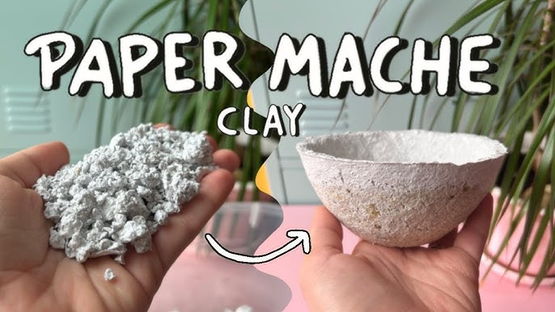

Papier Mâché (Paper Mache)
Meaning of Papier Mâché
Papier mâché is a French word that means “chewed paper.” It is a type of craft technique that involves using pieces of paper soaked in glue or starch to create solid, lightweight objects. In art, papier mâché is used to mold and form shapes like bowls, masks, toys, trays, sculptures, and decorations.

The paper becomes soft when mixed with water and glue, allowing it to be shaped and molded. When it dries, it becomes hard and strong. Papier mâché is an important part of sculpture and three-dimensional artwork in Creative Arts.
Materials and Tools Used in Papier Mâché
- Old newspapers or paper – for tearing and molding.
- Starch or glue – for binding the paper together.
- Water – for soaking and mixing the paste.
- Bowl or container – to mix the glue and soak the paper.
- Brush – to apply glue or smoothen the paper.
- Cardboard or mould base – to shape the work.
- Paints and colours – for decorating the finished work.
- Knife or scissors – for shaping and trimming.
Steps in Making Papier Mâché
- Tear paper into pieces – Use old newspapers or waste paper and tear them into small bits.
- Soak the paper – Put the pieces into water and soak them for a few hours or overnight.
- Mix with glue or starch – Add glue or boiled starch to make a thick paste.
- Prepare the mold – Use a bowl, balloon, or any base to form the shape you want.
- Apply the paste – Use your hands or brush to cover the mold with layers of papier mâché paste.
- Build up layers – Repeat the process until the object is thick enough to be strong.
- Leave to dry – Allow the object to dry under the sun or in a dry place for several hours or days.
- Decorate – Paint, colour, or decorate your object when it is completely dry.
Uses of Papier Mâché
- Making decorative masks.
- Producing flower vases and trays.
- Creating models, toys, and sculptures.
- Making carnival and festival props.
- Teaching creative art in schools.
Importance of Papier Mâché
- It teaches patience and creativity.
- It encourages recycling of waste materials.
- It helps students learn three-dimensional art.
- It is an affordable way to produce beautiful items.
- It builds hand skills and artistic confidence.